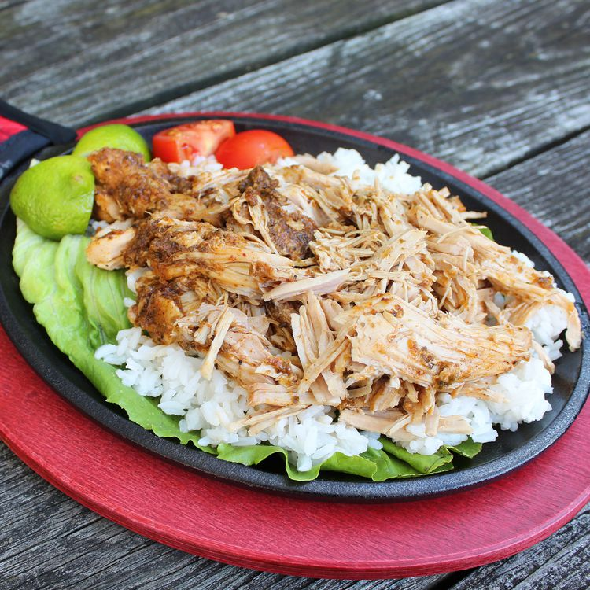

Pernil Pork

Description
Puerto Rican style pork roast, but done in the slow cooker. It's so tender and flavorful. Best of all, it's so easy to make!
Ingredients
- 4 cloves garlic
- 1 large onion, quartered
- 2 tablespoons chopped fresh oregano
- 1 tablespoon ground cumin
- 2 teaspoons ground ancho chile pepper
- 2 teaspoons salt
- 2 teaspoons ground black pepper
- 1 tablespoon white wine vinegar
- 1 tablespoon olive oil, or as needed
- 1 (3 pound) boneless pork loin roast
- 1 lime, cut into wedges
Steps
- Pulse garlic, onion, oregano, cumin, chile pepper, salt, and pepper together in a blender, pouring in vinegar and enough olive oil until mixture is pasty. Scrape down sides of the blender as necessary to fully incorporate. Spread this mixture all over the pork loin, and place into a slow cooker.
- Cook on Low until the pork is fork tender, 6 to 8 hours. When ready, cut the pork into chunks, or shred; garnish with lime wedges to serve.
HOME